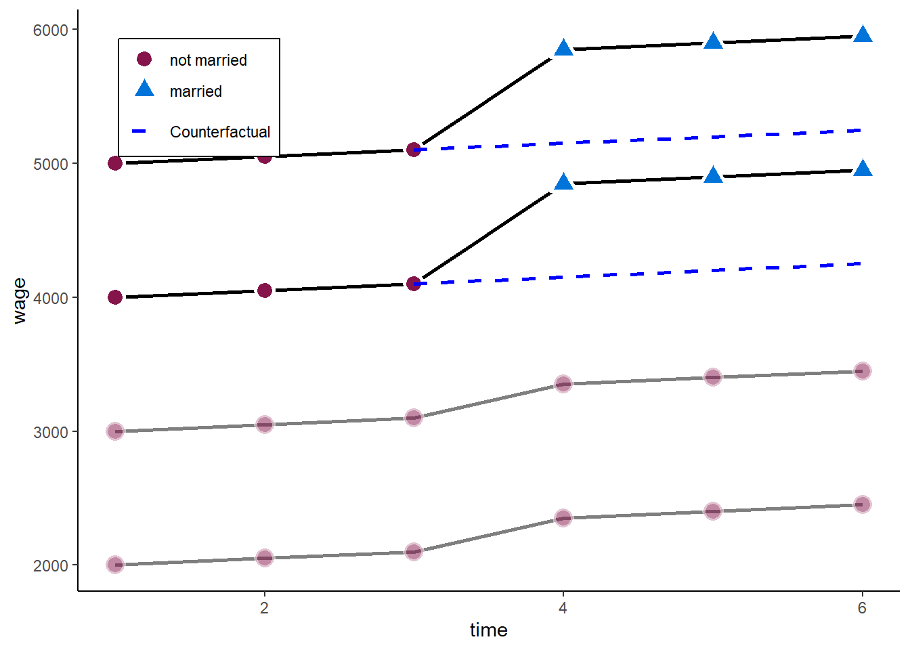
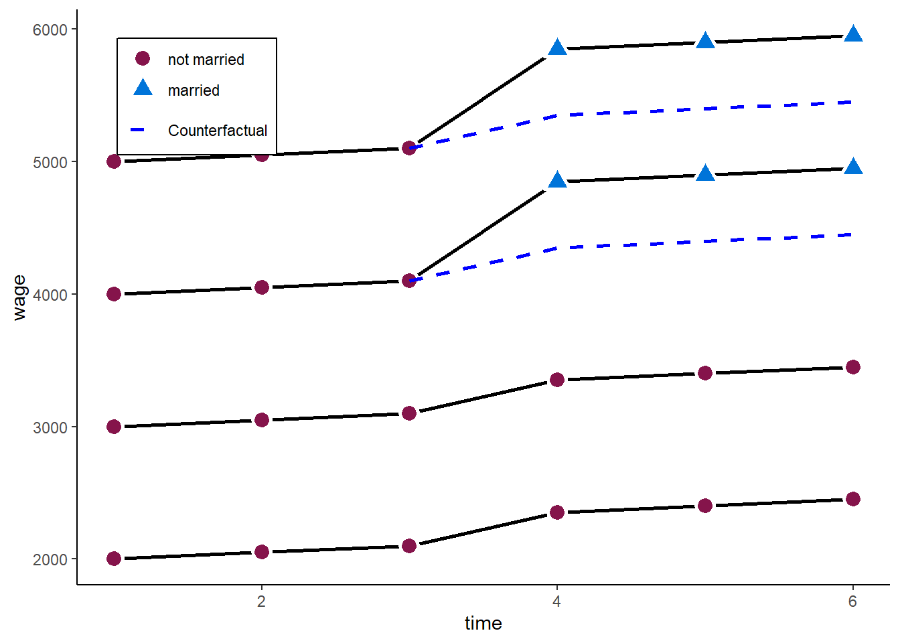
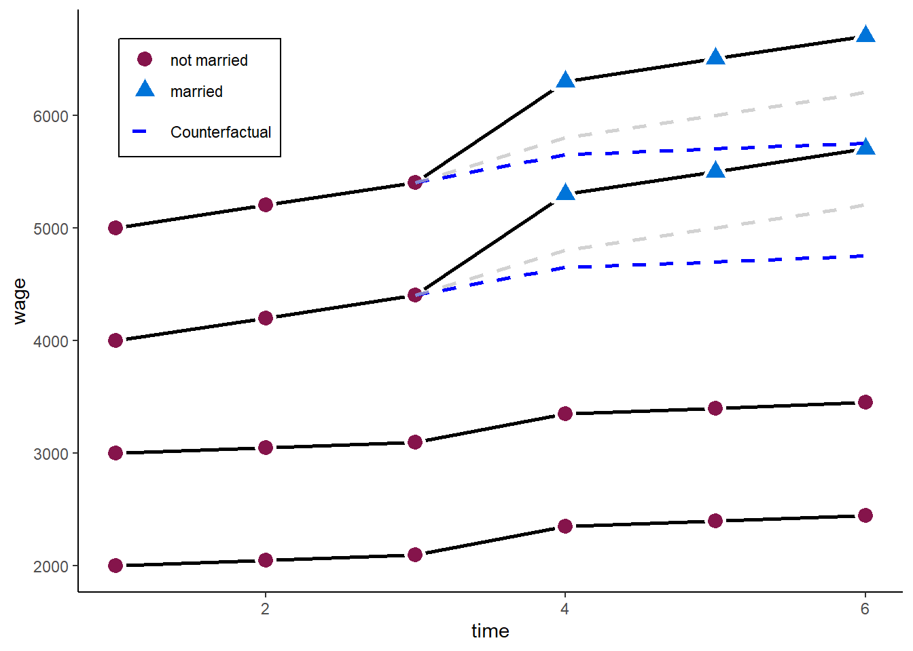

1) Panel data methods
Tobias Rüttenauer
December 03, 2021
Required packages
pkgs <- c("plm", "lfe", "texreg", "tidyr", "dplyr", "lmtest", "sandwich",
"ggplot2", "ggforce")
lapply(pkgs, require, character.only = TRUE)Session info
sessionInfo()## R version 4.1.0 (2021-05-18)
## Platform: x86_64-w64-mingw32/x64 (64-bit)
## Running under: Windows 10 x64 (build 19042)
##
## Matrix products: default
##
## locale:
## [1] LC_COLLATE=English_United Kingdom.1252
## [2] LC_CTYPE=English_United Kingdom.1252
## [3] LC_MONETARY=English_United Kingdom.1252
## [4] LC_NUMERIC=C
## [5] LC_TIME=English_United Kingdom.1252
##
## attached base packages:
## [1] stats graphics grDevices utils datasets methods base
##
## other attached packages:
## [1] ggforce_0.3.3 ggplot2_3.3.5 sandwich_3.0-1 lmtest_0.9-38 zoo_1.8-9
## [6] dplyr_1.0.6 tidyr_1.1.3 texreg_1.37.5 lfe_2.8-7 Matrix_1.3-3
## [11] plm_2.4-1
##
## loaded via a namespace (and not attached):
## [1] tidyselect_1.1.1 xfun_0.23 bslib_0.2.5.1 purrr_0.3.4
## [5] lattice_0.20-44 colorspace_2.0-1 vctrs_0.3.8 generics_0.1.0
## [9] htmltools_0.5.1.1 yaml_2.2.1 utf8_1.2.1 rlang_0.4.11
## [13] jquerylib_0.1.4 pillar_1.6.2 withr_2.4.2 glue_1.4.2
## [17] DBI_1.1.1 tweenr_1.0.2 lifecycle_1.0.0 stringr_1.4.0
## [21] munsell_0.5.0 gtable_0.3.0 bdsmatrix_1.3-4 evaluate_0.14
## [25] knitr_1.33 miscTools_0.6-26 fansi_0.5.0 Rcpp_1.0.7
## [29] xtable_1.8-4 scales_1.1.1 jsonlite_1.7.2 farver_2.1.0
## [33] maxLik_1.4-8 digest_0.6.27 stringi_1.6.2 polyclip_1.10-0
## [37] rbibutils_2.2 grid_4.1.0 Rdpack_2.1.2 tools_4.1.0
## [41] magrittr_2.0.1 sass_0.4.0 tibble_3.1.2 Formula_1.2-4
## [45] crayon_1.4.1 pkgconfig_2.0.3 MASS_7.3-54 ellipsis_0.3.2
## [49] assertthat_0.2.1 rmarkdown_2.11 httr_1.4.2 R6_2.5.1
## [53] nlme_3.1-152 compiler_4.1.0Outline
Panel data structure
Decomposing variance
Fixed Effects Model
Random Effects Model
Hybrid / Mundlak models
Statistical inference
Panel data structure
Usually cross-sectional data is organized as a matrix, where rows represent the obervation / individual and the columns hold the variables. In panel data settings, we need to add the dimension of time. There are two ways to do so:
Long format: \(N \times T\) observations (rows), with variables “id” and “time.”
Wide format: \(N\) observations, and \(T \times K\) variables, which one variable for each time-period.
Let’s have a look at the Wages data of the plm package.
data("Males")
head(Males[,1:5], n = 16)## nr year school exper union
## 1 13 1980 14 1 no
## 2 13 1981 14 2 yes
## 3 13 1982 14 3 no
## 4 13 1983 14 4 no
## 5 13 1984 14 5 no
## 6 13 1985 14 6 no
## 7 13 1986 14 7 no
## 8 13 1987 14 8 no
## 9 17 1980 13 4 no
## 10 17 1981 13 5 no
## 11 17 1982 13 6 no
## 12 17 1983 13 7 no
## 13 17 1984 13 8 no
## 14 17 1985 13 9 no
## 15 17 1986 13 10 no
## 16 17 1987 13 11 noThis is long format, with nr as id and year as time indicator. Long format is what we usually need when analysing data.
Sometimes data comes in wide format. Luckily, we can easily switch between those formats using tidyr.
Males_wide <- pivot_wider(Males, id_cols = nr, names_from = year,
values_from = 3:ncol(Males), names_sep = "_")
head(Males_wide[,1:5], n = 16)## # A tibble: 16 x 5
## nr school_1980 school_1981 school_1982 school_1983
## <int> <int> <int> <int> <int>
## 1 13 14 14 14 14
## 2 17 13 13 13 13
## 3 18 12 12 12 12
## 4 45 12 12 12 12
## 5 110 12 12 12 12
## 6 120 10 10 10 10
## 7 126 13 13 13 13
## 8 150 12 12 12 12
## 9 162 11 11 11 11
## 10 166 10 10 10 10
## 11 189 14 14 14 14
## 12 193 14 14 14 14
## 13 209 11 11 11 11
## 14 212 11 11 11 11
## 15 218 15 15 15 15
## 16 243 12 12 12 12And we can go back to long again:
Males_long <- pivot_longer(Males_wide, cols = 2:ncol(Males_wide),
names_to = c(".value", "year"),
names_pattern = "(.*)_(.*)")
head(Males_long[,1:5], n = 16)## # A tibble: 16 x 5
## nr year school exper union
## <int> <chr> <int> <int> <fct>
## 1 13 1980 14 1 no
## 2 13 1981 14 2 yes
## 3 13 1982 14 3 no
## 4 13 1983 14 4 no
## 5 13 1984 14 5 no
## 6 13 1985 14 6 no
## 7 13 1986 14 7 no
## 8 13 1987 14 8 no
## 9 17 1980 13 4 no
## 10 17 1981 13 5 no
## 11 17 1982 13 6 no
## 12 17 1983 13 7 no
## 13 17 1984 13 8 no
## 14 17 1985 13 9 no
## 15 17 1986 13 10 no
## 16 17 1987 13 11 noMoreover, there two types of panel data:
Balanced: Contains information for each unit at each time period
Unbalanced: Some units have missing information at some time periods
is.pbalanced(Males, index = c("nr", "year"))## [1] TRUEIn our example, we have balanced data (although there might still be NAs in the data).
A nice feature of panel data is that we can do some within-person transformation. For instance we can calculate the lags and leads, or first differences of data. NOTE: always make sure the data is sorted properly before you do!
# Order data
Males <- Males[order(Males$nr, Males$year),]
# Lag (last years value)
Males$lag_wage <- ave(Males$wage,
Males$nr,
FUN = function(x) dplyr::lag(x, n = 1))
# Lead (next years value)
Males$lead_wage <- ave(Males$wage,
Males$nr,
FUN = function(x) dplyr::lead(x, n = 1))
# First difference (this years value minus last years value)
Males$fd_wage <- ave(Males$wage,
Males$nr,
FUN = function(x) x - dplyr::lag(x, n = 1))
head(Males[, c("nr", "year", "wage", "lag_wage", "lead_wage", "fd_wage")], n = 16)## nr year wage lag_wage lead_wage fd_wage
## 1 13 1980 1.1975402 NA 1.8530600 NA
## 2 13 1981 1.8530600 1.1975402 1.3444617 0.65551979
## 3 13 1982 1.3444617 1.8530600 1.4332133 -0.50859832
## 4 13 1983 1.4332133 1.3444617 1.5681251 0.08875166
## 5 13 1984 1.5681251 1.4332133 1.6998909 0.13491174
## 6 13 1985 1.6998909 1.5681251 -0.7202626 0.13176586
## 7 13 1986 -0.7202626 1.6998909 1.6691879 -2.42015352
## 8 13 1987 1.6691879 -0.7202626 NA 2.38945049
## 9 17 1980 1.6759624 NA 1.5183982 NA
## 10 17 1981 1.5183982 1.6759624 1.5591905 -0.15756420
## 11 17 1982 1.5591905 1.5183982 1.7254101 0.04079228
## 12 17 1983 1.7254101 1.5591905 1.6220223 0.16621961
## 13 17 1984 1.6220223 1.7254101 1.6085883 -0.10338777
## 14 17 1985 1.6085883 1.6220223 1.5723854 -0.01343405
## 15 17 1986 1.5723854 1.6085883 1.8203339 -0.03620286
## 16 17 1987 1.8203339 1.5723854 NA 0.24794844There are a lot of different panel data sources available. Some examples are:
And there are various process generated data having a longitudinal / pnale dimension as well. For instance:
One thing that is often difficult: Many panel data come as a bunch of single (cross-sectional) files and have to be combined into a single dataset. However, many of those providers (or nice colleagues) now offer simplified long-format data or pre-written scripts to merge data across waves (e.g. here for Understanding Society, or here for SOEP).
A second problem is panel attrition. Usually, the number of individuals participating repeatedly goes down over time.

Rainer Siegers, Veronika Belcheva, Tobias Silbermann 2020: https://www.diw.de/documents/publikationen/73/diw_01.c.745900.de/diw_ssp0826.pdf
The main question here: Is attrition (as good as) random or are drop-outs systematic? How does this affect the sample composition and representativeness?
Decomposing variance
Let’s clarify the idea and advantage of panel data with an example. Assume we want to know the relationship between age (as our independent variable) and happiness (as our dependent variable), and we have data on 24 observations.
################################
### Example 1: Age happiness ###
################################
set.seed(213)
### Set up six individuals with age and happiness
N <- 6
T <- 4
# id and wave
df <- data.frame(matrix(NA, ncol = 2, nrow = N*T))
names(df) <- c("id", "wave")
df$id <- rep(1:N, each = T)
df$wave <- rep(1:T, times = N)
df$idname <- factor(df$id, levels = c(1:N), labels = paste("Person", c(1:N)))
# age
startingage <- c(20:60)
startingage <- round(quantile(startingage, probs = seq(0, 1, 1/(N-1))), 0)
df$age <- unname(rep(startingage, each = T)) + df$wave*2
# cohort
df$cohort <- 0
df$cohort[(N*T/2 + 1):(N*T)] <- 1
df$cohort <- factor(df$cohort, levels = c(0, 1),
labels = c("Younger cohort", "Older cohort"))
# demeaned age
df$dm_age <- df$age - ave(df$age, df$id, FUN = function(x) mean(x))
# Personal intercept
df$intercept <- 5 + 0.5 * df$id
# Gen happiness
u <- rnorm(N*T, mean = 0, sd = 0.2)
y <- 1 + 0.05 * df$age - 0.2 * df$dm_age + 2 * as.numeric(df$cohort) + u
df$happiness <- y
# Gen person means
df$m_age <- ave(df$age, df$id, FUN = function(x) mean(x))
df$m_happiness <- ave(df$happiness, df$id, FUN = function(x) mean(x))
# Total line for plot
lm1 <- lm(happiness ~ age, data = df)
lm2 <- lm(happiness ~ age + cohort, data = df)
lm3 <- lm(happiness ~ age + idname, data = df)
lm4 <- lm(m_happiness ~ m_age, data = df)Cross-sectional setting
In a cross-sectional setting, we could just run a standard linear regression model using Omitted Least Squares (OLS) of the form \[ y_{i} = \alpha + \beta_1 x_{i} + \upsilon_{i}, \] where \(y_{i}\) is the dependent variable (happiness) and \(x_i\) the independent variable of each observation \(i \in \{1, \dots, 24\}\). \(\beta_1\) is the coefficient of interest, \(\alpha\) the overall intercept and \(\upsilon_{i}\) the error term.
lm1 <- lm(happiness ~ age, data = df)
summary(lm1)##
## Call:
## lm(formula = happiness ~ age, data = df)
##
## Residuals:
## Min 1Q Median 3Q Max
## -1.4964 -0.4209 -0.1201 0.6615 1.6868
##
## Coefficients:
## Estimate Std. Error t value Pr(>|t|)
## (Intercept) 1.0506 0.5696 1.844 0.0787 .
## age 0.1151 0.0121 9.515 2.96e-09 ***
## ---
## Signif. codes: 0 '***' 0.001 '**' 0.01 '*' 0.05 '.' 0.1 ' ' 1
##
## Residual standard error: 0.8206 on 22 degrees of freedom
## Multiple R-squared: 0.8045, Adjusted R-squared: 0.7956
## F-statistic: 90.53 on 1 and 22 DF, p-value: 2.96e-09This indicates a positive relation between age and happiness. Graphically, this would look like:
zp1 <- ggplot(df, aes(age, happiness)) +
geom_point( aes(x = age, y = happiness), size = 2, stroke = 1) +
geom_smooth(method = 'lm', formula = y ~ x, se = FALSE) +
ylim(3.3, 9.2) + expand_limits(y = c(0, 0)) +
theme_bw() +
theme(legend.key = element_blank(), legend.title = element_blank(),
legend.position = c(0.95,0.05), legend.justification = c("right", "bottom"),
legend.background = element_blank(),
legend.box.background = element_rect(colour = "black"))
zp1 Obviously, we might suspect some other characteristics to influence our results. For instance, birth cohort might be factor that affects age and happiness. We can easily add a control for the cohort so account for this possibility. We would then estiamte the model
\[ y_{i} = \alpha + \beta_1 x_{i} + \beta_2 z_{it} + \upsilon_{i}, \] where \(z_i\) is the control variable (cohort).
lm2 <- lm(happiness ~ age + cohort, data = df)
summary(lm2)##
## Call:
## lm(formula = happiness ~ age + cohort, data = df)
##
## Residuals:
## Min 1Q Median 3Q Max
## -1.01188 -0.35012 -0.01682 0.31611 0.92289
##
## Coefficients:
## Estimate Std. Error t value Pr(>|t|)
## (Intercept) 3.32191 0.52030 6.385 2.50e-06 ***
## age 0.03687 0.01512 2.439 0.0237 *
## cohortOlder cohort 2.49959 0.41862 5.971 6.31e-06 ***
## ---
## Signif. codes: 0 '***' 0.001 '**' 0.01 '*' 0.05 '.' 0.1 ' ' 1
##
## Residual standard error: 0.5114 on 21 degrees of freedom
## Multiple R-squared: 0.9275, Adjusted R-squared: 0.9206
## F-statistic: 134.4 on 2 and 21 DF, p-value: 1.075e-12As a result, the effect of age becomes weaker. Graphically, this would look like:
zp2 <- ggplot(df, aes(age, happiness)) +
geom_point(aes(x = age, y = happiness, shape = cohort, colour = cohort),
size = 2, stroke = 1) +
geom_smooth(method = 'lm', formula = y ~ x, se = FALSE, show.legend = FALSE,
mapping = aes(colour = cohort, linetype = cohort)) +
geom_abline(intercept = lm2$coefficients[1] + 0.5 * lm2$coefficients[3],
slope = lm2$coefficients[2], col = "blue") +
ylim(3.3, 9.2) + expand_limits(y = c(0, 0)) +
theme_bw() +
theme(legend.key = element_blank(), legend.title = element_blank(),
legend.position = c(0.95,0.05), legend.justification = c("right", "bottom"),
legend.background = element_blank(),
legend.box.background = element_rect(colour = "black"))
zp2 
So, what we basically receive here is the (weighted) average effect within each birth cohort. We use only similar observations (in terms of cohort) to estimate our effect of interest. If we add some controls, we also decompose the variance which goes into our estimator
Panel data setting
Now, with panel data, we can even go a step further. Assume we would not have observed 24 independent observations, but rather 6 independent individuals (N = 6) at 4 time-points each (T = 4).
zp3 <- ggplot(df, aes(age, happiness)) +
geom_point( aes(x = age, y = happiness, shape = idname, colour = idname),
size = 2, stroke = 1) +
ylim(3.3, 9.2) + expand_limits(y = c(0, 0)) +
theme_bw() +
theme(legend.key = element_blank(), legend.title = element_blank(),
legend.position = c(0.95,0.05), legend.justification = c("right", "bottom"),
legend.background = element_blank(),
legend.box.background = element_rect(colour = "black"))
zp3 
We can then decompose the available variance into three different parts:
Pooled variance
Between variance
Within variance
Pooled estimator
The pooled estimator equals what we have seen in the cross-sectional example: we basically assume that we have 24 independent observations and we ignore the person and time dimension. The Pooled OLS estimator is simply:
\[ y_{it} = \alpha + \beta_{POLS} x_{it} + \upsilon_{it}, \]
And, as above, we use the simple `lm()’ command
lm1 <- lm(happiness ~ age, data = df)
summary(lm1)##
## Call:
## lm(formula = happiness ~ age, data = df)
##
## Residuals:
## Min 1Q Median 3Q Max
## -1.4964 -0.4209 -0.1201 0.6615 1.6868
##
## Coefficients:
## Estimate Std. Error t value Pr(>|t|)
## (Intercept) 1.0506 0.5696 1.844 0.0787 .
## age 0.1151 0.0121 9.515 2.96e-09 ***
## ---
## Signif. codes: 0 '***' 0.001 '**' 0.01 '*' 0.05 '.' 0.1 ' ' 1
##
## Residual standard error: 0.8206 on 22 degrees of freedom
## Multiple R-squared: 0.8045, Adjusted R-squared: 0.7956
## F-statistic: 90.53 on 1 and 22 DF, p-value: 2.96e-09which graphically looks like:
zp3 <- ggplot(df, aes(age, happiness)) +
geom_point( aes(x = age, y = happiness, shape = idname, colour = idname),
size = 2, stroke = 1) +
geom_smooth(method = 'lm', formula = y ~ x, se = FALSE) +
ylim(3.3, 9.2) + expand_limits(y = c(0, 0)) +
theme_bw() +
theme(legend.key = element_blank(), legend.title = element_blank(),
legend.position = c(0.95,0.05), legend.justification = c("right", "bottom"),
legend.background = element_blank(),
legend.box.background = element_rect(colour = "black"))
zp3 
Between estimator
The between estimator only compares different persons and discards the within-person variance. Therefore, we simply run a model that only uses the person-specific means
\[ \bar{y_{i}} = \alpha + \beta_{BTW} \bar{x_{i}} + \bar{\upsilon_{i}}, \]
We can either estimate this by hand:
df$m_happiness <- ave(df$happiness, df$id, FUN = mean)
df$m_age <- ave(df$age, df$id, FUN = mean)
lm2 <- lm(m_happiness ~ m_age, data = df)
summary(lm2)##
## Call:
## lm(formula = m_happiness ~ m_age, data = df)
##
## Residuals:
## Min 1Q Median 3Q Max
## -0.77437 -0.17518 -0.06819 0.25424 0.83169
##
## Coefficients:
## Estimate Std. Error t value Pr(>|t|)
## (Intercept) 0.733095 0.356036 2.059 0.0515 .
## m_age 0.122176 0.007571 16.138 1.12e-13 ***
## ---
## Signif. codes: 0 '***' 0.001 '**' 0.01 '*' 0.05 '.' 0.1 ' ' 1
##
## Residual standard error: 0.5067 on 22 degrees of freedom
## Multiple R-squared: 0.9221, Adjusted R-squared: 0.9186
## F-statistic: 260.4 on 1 and 22 DF, p-value: 1.118e-13or we use the plm package to do the job for us
btw2 <- plm(happiness ~ age, data = df,
index = c("id", "wave"),
effect = "individual", model = "between")
summary(btw2)## Oneway (individual) effect Between Model
##
## Call:
## plm(formula = happiness ~ age, data = df, effect = "individual",
## model = "between", index = c("id", "wave"))
##
## Balanced Panel: n = 6, T = 4, N = 24
## Observations used in estimation: 6
##
## Residuals:
## 1 2 3 4 5 6
## 0.254242 -0.158370 -0.774367 0.831689 0.021989 -0.175184
##
## Coefficients:
## Estimate Std. Error t-value Pr(>|t|)
## (Intercept) 0.733095 0.834979 0.8780 0.429528
## age 0.122176 0.017755 6.8813 0.002337 **
## ---
## Signif. codes: 0 '***' 0.001 '**' 0.01 '*' 0.05 '.' 0.1 ' ' 1
##
## Total Sum of Squares: 18.13
## Residual Sum of Squares: 1.4122
## R-Squared: 0.92211
## Adj. R-Squared: 0.90263
## F-statistic: 47.3519 on 1 and 4 DF, p-value: 0.0023371NOTE the line “observations used in estimation” ! The manual approach with lm assumes we have 24 independent observations. This is not true, we only have 6 independent observations, where each is replicated 4 times in the data.
Graphically this result looks like:
zp4 <- ggplot(df, aes(age, happiness)) +
geom_point(aes(x = age, y = happiness, shape = idname),
size = 2, stroke = 1, colour = alpha("black", .3)) +
geom_point(aes(x = m_age, y = m_happiness, shape = idname, colour = idname),
size = 2, stroke = 1) +
geom_abline(intercept = lm4$coefficients[1],
slope = lm4$coefficients[2], col = "blue") +
ylim(3.3, 9.2) + expand_limits(y = c(0, 0)) +
theme_bw() +
theme(legend.key = element_blank(), legend.title = element_blank(),
legend.position = c(0.95,0.05), legend.justification = c("right", "bottom"),
legend.background = element_blank(),
legend.box.background = element_rect(colour = "black"))
zp4 
Within estimator
The within estimator only compares different periods within the same person and discards the between-person variance. We could also say the estimator is solely based on changes over time. To achieve this, we simply give every person their own intercept / add a dummy for each person (similar to the cohort example above).
\[ y_{it} = \alpha_i + \beta_{WI} x_{it} + \epsilon_{it}, \]
Again, we could run this manually
lm3 <- lm(happiness ~ age + idname, data = df)
summary(lm3)##
## Call:
## lm(formula = happiness ~ age + idname, data = df)
##
## Residuals:
## Min 1Q Median 3Q Max
## -0.28791 -0.11875 0.03583 0.14172 0.27594
##
## Coefficients:
## Estimate Std. Error t value Pr(>|t|)
## (Intercept) 7.74785 0.44579 17.380 2.93e-12 ***
## age -0.14824 0.01742 -8.511 1.56e-07 ***
## idnamePerson 2 1.75075 0.19396 9.026 6.80e-08 ***
## idnamePerson 3 3.29812 0.30964 10.652 6.09e-09 ***
## idnamePerson 4 7.06754 0.43927 16.089 1.01e-11 ***
## idnamePerson 5 8.42120 0.57348 14.684 4.34e-11 ***
## idnamePerson 6 10.38740 0.70968 14.637 4.57e-11 ***
## ---
## Signif. codes: 0 '***' 0.001 '**' 0.01 '*' 0.05 '.' 0.1 ' ' 1
##
## Residual standard error: 0.1908 on 17 degrees of freedom
## Multiple R-squared: 0.9918, Adjusted R-squared: 0.9889
## F-statistic: 344.1 on 6 and 17 DF, p-value: < 2.2e-16or we use plm:
fe1 <- plm(happiness ~ age, data = df,
index = c("id", "wave"),
effect = "individual", model = "within")
summary(fe1)## Oneway (individual) effect Within Model
##
## Call:
## plm(formula = happiness ~ age, data = df, effect = "individual",
## model = "within", index = c("id", "wave"))
##
## Balanced Panel: n = 6, T = 4, N = 24
##
## Residuals:
## Min. 1st Qu. Median 3rd Qu. Max.
## -0.287907 -0.118754 0.035834 0.141721 0.275941
##
## Coefficients:
## Estimate Std. Error t-value Pr(>|t|)
## age -0.148245 0.017418 -8.5108 1.556e-07 ***
## ---
## Signif. codes: 0 '***' 0.001 '**' 0.01 '*' 0.05 '.' 0.1 ' ' 1
##
## Total Sum of Squares: 3.2561
## Residual Sum of Squares: 0.61893
## R-Squared: 0.80992
## Adj. R-Squared: 0.74283
## F-statistic: 72.4345 on 1 and 17 DF, p-value: 1.5556e-07Graphically, this would look like:
zp5 <- ggplot(df, aes(age, happiness)) +
geom_point( aes(x = age, y = happiness, shape = idname, colour = idname),
size = 2, stroke = 1) +
geom_smooth(method = 'lm', formula = y ~ x, se = FALSE, show.legend = FALSE,
mapping = aes(colour = idname, linetype = idname)) +
geom_abline(intercept = lm3$coefficients[1] + 1/N * lm3$coefficients[3] + 1/N * lm3$coefficients[4]
+ 1/N * lm3$coefficients[5] + 1/N * lm3$coefficients[6] + 1/N * lm3$coefficients[7],
slope = lm3$coefficients[2], col = "blue") +
ylim(3.3, 9.2) + expand_limits(y = c(0, 0)) +
theme_bw() +
theme(legend.key = element_blank(), legend.title = element_blank(),
legend.position = c(0.95,0.05), legend.justification = c("right", "bottom"),
legend.background = element_blank(),
legend.box.background = element_rect(colour = "black"))
zp5
Now, we have estimated the effect by only taking observations within each person into account: given the person id, how does age correlate with happiness.
Comparison
screenreg(list(lm1, lm2, lm3), digits = 3,
custom.model.names = c("POLS", "Between", "Within"))##
## ==================================================
## POLS Between Within
## --------------------------------------------------
## (Intercept) 1.051 0.733 7.748 ***
## (0.570) (0.356) (0.446)
## age 0.115 *** -0.148 ***
## (0.012) (0.017)
## m_age 0.122 ***
## (0.008)
## idnamePerson 2 1.751 ***
## (0.194)
## idnamePerson 3 3.298 ***
## (0.310)
## idnamePerson 4 7.068 ***
## (0.439)
## idnamePerson 5 8.421 ***
## (0.573)
## idnamePerson 6 10.387 ***
## (0.710)
## --------------------------------------------------
## R^2 0.805 0.922 0.992
## Adj. R^2 0.796 0.919 0.989
## Num. obs. 24 24 24
## ==================================================
## *** p < 0.001; ** p < 0.01; * p < 0.05POLS: The older an observation (person-year), the higher its happiness.
Between: The older a person, the higher their happiness.
Within: Increasing age within a person goes along with declining happiness within the same person.
The estimates for \(\beta_{POLS}\) and \(\beta_{BTW}\) are very similar here. We will see below why.
This is by the way how the relationship looks like with real world data (in Germany)

Working paper by Kratz and Brüderl (2021)
Fixed effects estimator
The estimator we used above to derive the within coefficient is the fixed effects (FE) estimator. This method is very widely used, especially with survey data.
We use a second example here: assume we observe 4 individuals over 6 periods, and we want to estimate the effect of marriage on the wage for males. This is the so called “marriage wage premium” (Ludwig and Brüderl 2018).
##################################
### Example 2: Marriage Income ###
##################################
### Set up six individuals with age and happiness
N <- 4
T <- 6
# id and wave
df2 <- data.frame(matrix(NA, ncol = 2, nrow = N*T))
names(df2) <- c("id", "wave")
df2$id <- rep(1:N, each = T)
df2$wave <- rep(1:T, times = N)
df2$idname <- factor(df2$id, levels = c(1:N), labels = paste("Person", c(1:N)))
# Marriage dummy
df2$marriage_ever <- 0
df2$marriage_ever[(N*T/2 + 1):(N*T)] <- 1
df2$marriage <- df2$marriage_ever * ifelse(df2$wave >= 4, 1, 0)
# Starting wage
stw <- c(2000, 5000)
stw <- round(quantile(stw, probs = seq(0, 1, 1/(N-1))), 0)
# wage equation
df2$wage <- unname(rep(stw, each = T)) + (df2$wave - 1)*50 + 200 * ifelse(df2$wave >=4, 1, 0) + df2$marriage * 500
# counterfactual parallel trend
df2$pti <- unname(rep(stw, each = T)) + (df2$wave - 1)*50
df2$pt <- unname(rep(stw, each = T)) + (df2$wave - 1)*50 + 200 * ifelse(df2$wave >=4, 1, 0)
df2$pti[df2$marriage_ever == 0 | df2$wave < 3] <- NA
df2$pt[df2$marriage_ever == 0 | df2$wave < 3] <- NA
### Add individual slope / heterogeneous time trends
# wage equation
df2$wage2 <- unname(rep(stw, each = T)) + (df2$wave - 1)*50 + (df2$wave - 1)*150*df2$marriage_ever + 200 * ifelse(df2$wave >=4, 1, 0) + df2$marriage * 500
# parallel trend
df2$pt2 <- unname(rep(stw, each = T)) + (df2$wave - 1)*50 + 200 * ifelse(df2$wave >=4, 1, 0) + 2*150
df2$pt2[df2$marriage_ever == 0 | df2$wave < 3] <- NA
# actual trend
df2$pt2_cr <- unname(rep(stw, each = T)) + (df2$wave - 1)*50 + (df2$wave - 1)*150*df2$marriage_ever + 200 * ifelse(df2$wave >=4, 1, 0)
df2$pt2_cr[df2$marriage_ever == 0 | df2$wave < 3] <- NA
# Marry to factor
df2$marriage <- factor(df2$marriage, levels = c(0, 1), labels = c("not married", "married"))
df2$marriage_ever <- as.factor(df2$marriage_ever)
### Plot
zp1 <- ggplot(df2, aes(wave, wage)) +
geom_line(aes(x = wave, y = wage, group = id), lty = "solid", colour = "black", lwd = 1) +
geom_point( aes(x = wave, y = wage, shape = marriage, colour = marriage),
size = 2, stroke = 2) +
theme_bw() +
theme(legend.key = element_blank(), legend.title = element_blank(),
legend.position = c(0.05,0.95), legend.justification = c("left", "top"),
legend.background = element_blank(),
legend.box.background = element_rect(colour = "black"),
legend.spacing.y = unit(-0.1, "cm"))
zp1 
Pooled OLS (again)
Let’s start with the conventional Pooled OLS (POLS) estimator on panel data
\[ y_{it} = \alpha + \beta x_{it} + \upsilon_{it} \]
The main problem: this model relies on very strong assumptions for consistency, with the most important one being:
- \(\mathrm{E}(\upsilon_{it} | x_{it}) = 0\), or \(Cov(x_{it}, \upsilon_{it}) = 0\)
The error (including omitted variables) must not be correlated with \(x_{it}\). In observational studies, we have or cannot observe a lot of things. However, everything that influences \(y_{it}\) but is unobserved ends up in \(\upsilon_{it}\). If anything correlates with \(x_{it}\), it is endogenous, and \(\hat{\beta}_x\) will be biased.
Take our marriage example.
summary(lm(wage ~ marriage, data = df2))##
## Call:
## lm(formula = wage ~ marriage, data = df2)
##
## Residuals:
## Min 1Q Median 3Q Max
## -1333.3 -633.3 -108.3 579.2 1766.7
##
## Coefficients:
## Estimate Std. Error t value Pr(>|t|)
## (Intercept) 3333.3 223.2 14.934 5.37e-13 ***
## marriagemarried 2066.7 446.4 4.629 0.00013 ***
## ---
## Signif. codes: 0 '***' 0.001 '**' 0.01 '*' 0.05 '.' 0.1 ' ' 1
##
## Residual standard error: 947 on 22 degrees of freedom
## Multiple R-squared: 0.4935, Adjusted R-squared: 0.4704
## F-statistic: 21.43 on 1 and 22 DF, p-value: 0.0001297We would estimate a marriage premium of more than 2,000. The true value is 500. The reason: those who marry at some point already had higher wages before they married.
### Plot
zp2 <- ggplot(df2, aes(wave, wage)) +
geom_line(aes(x = wave, y = wage, group = id), lty = "solid", colour = "black", lwd = 1) +
geom_point( aes(x = wave, y = wage, shape = marriage, colour = marriage),
size = 2, stroke = 2) +
geom_mark_hull(expand = 0.01, aes(fill = marriage), show.legend = FALSE, colour = NA) +
theme_bw() +
theme(legend.key = element_blank(), legend.title = element_blank(),
legend.position = c(0.05,0.95), legend.justification = c("left", "top"),
legend.background = element_blank(),
legend.box.background = element_rect(colour = "black"),
legend.spacing.y = unit(-0.1, "cm"))
zp2One-ways fixed effects
To relax the strong assumption, we can decompose the error into two parts (between and within) with panel data: \(\upsilon_{it} = \alpha_i + \epsilon_{it} = 0\), where \(\alpha_i\) is the time-constant (person-specific or between) part of the error, and \(\epsilon_{it} = 0\) is the time-varying (idiosyncratic or within) part of the error.
We can thus split up our main assumption for consistency:
\(\mathrm{E}(\alpha_{i} | x_{it}) = 0\): No time-constant unobserved heterogeneity
\(\mathrm{E}(\epsilon_{it} | x_{it}) = 0\): No time-varying unobserved heterogeneity
And write the error component model:
\[ y_{it} = \beta x_{it} + \alpha_i + \epsilon_{it} \] As we have seen above, we can include person-dummies to estimate the model above. However, this becomes computationally intense if we have thousands of individuals
Thus, we usually use a transformation approach, where we first subtract the between variance by using use the person-specific means:
\[ \bar{y_{i}} = \beta \bar{x_{i}} + \alpha_i + \bar{\epsilon_{i}} \]
We then subtract this between part from the pooled data:
\[ y_{it} - \bar{y_{i}} = \beta (x_{it}-\bar{x_{i}}) + (\alpha_i - \alpha_i) + (\epsilon_{it}-\bar{\epsilon_{i}})\\ \tilde{y}_{it} = \beta \tilde{x}_{it} + \tilde{\epsilon}_{it}. \]
This is called the within transformation. For each group (individual, district, firm), we subtract the group-specific mean from the original variable. This eliminates all between-group variance, including the person-specific part of the error term (\(\alpha_i\)).
The \(\hat{beta}_{FE}\) is then just the OLS estimator on the transformed data:
\[ \hat{\boldsymbol{\mathbf{\beta}}} = (\boldsymbol{\mathbf{X}}^\intercal\boldsymbol{\mathbf{X}})^{-1}\boldsymbol{\mathbf{X}}^\intercal \boldsymbol{\mathbf{y}} \]
Note: this also means that every time-constant variable is wiped out - we cannot estimate their effects in FE models!
Note: the FE estimator can only be applied to observations which are at least observed 2 times (\(T \geq 2\))!
The main assumption for consistency now is
- \(\mathrm{E}(\epsilon_{it} | x_{it}, \alpha_i) = 0\)
Idiosyncratic time-variation in \(\epsilon_i\) must be uncorrelated with variation in \(x_i\) across all time periods. However, \(\mathrm{E}(\alpha_{i} | x_{i})\) can be any function of \(x_i\).
Time-constant unobserved heterogeneity is allowed
Only time-varying unobserved heterogeneity biases the estimator
We can use the plm package with options effect = "individual" and model = "within" to estimate one-ways FE models:
fe2 <- plm(wage ~ marriage, data = df2,
index = c("id", "wave"),
effect = "individual", model = "within")
summary(fe2)## Oneway (individual) effect Within Model
##
## Call:
## plm(formula = wage ~ marriage, data = df2, effect = "individual",
## model = "within", index = c("id", "wave"))
##
## Balanced Panel: n = 4, T = 6, N = 24
##
## Residuals:
## Min. 1st Qu. Median 3rd Qu. Max.
## -225.00 -68.75 0.00 68.75 225.00
##
## Coefficients:
## Estimate Std. Error t-value Pr(>|t|)
## marriagemarried 850.000 84.552 10.053 4.834e-09 ***
## ---
## Signif. codes: 0 '***' 0.001 '**' 0.01 '*' 0.05 '.' 0.1 ' ' 1
##
## Total Sum of Squares: 2575000
## Residual Sum of Squares: 407500
## R-Squared: 0.84175
## Adj. R-Squared: 0.80843
## F-statistic: 101.061 on 1 and 19 DF, p-value: 4.8337e-09Hm, 850 is closer to 500, but still quite far off! Let’s see why.
### Plot
zp3 <- ggplot(df2, aes(wave, wage)) +
geom_line(aes(x = wave, y = wage, group = id, alpha = marriage_ever), lty = "solid", colour = "black", lwd = 1) +
geom_point( aes(x = wave, y = wage, shape = marriage, colour = marriage, alpha = marriage_ever),
size = 2, stroke = 2) +
geom_line(aes(x = wave, y = pti, group = id, linetype = "dashed"), colour = "blue", lwd = 1) +
scale_linetype_identity(labels = "Counterfactual", guide = "legend") +
scale_alpha_manual(values = c(0.5, 1), guide = "none") +
# geom_mark_hull(data = df2[df2$marriage_ever == 1, ], aes(x = wave, y = wage, fill = marriage),
# expand = 0.01, show.legend = FALSE, colour = NA) +
theme_bw() +
theme(legend.key = element_blank(), legend.title = element_blank(),
legend.position = c(0.05,0.95), legend.justification = c("left", "top"),
legend.background = element_blank(),
legend.box.background = element_rect(colour = "black"),
legend.spacing.y = unit(-0.1, "cm"))
zp3
NOTE: A one-ways FE would effectively drop all those observations without within-variance on the independent variables. In our case, we would disregard those who never marry.
However, they also experienced an increase in wages when the other two married.
Two-ways FE
To circumvent the problem above, we want to add the never-married as a control group in our estimator.
In general, it is always a good idea to control for temporal shocks!
We can do so by including person fixed effects and time fixed effects:
\[ y_{it} = \beta x_{it} + \alpha_i + \zeta_t + \epsilon_{it}, \]
where \(\zeta_t\) are time fixed effects (analogous to \(\alpha_i\)). In terms of demeaning this would look like:
\[ (y_{it} - \bar{y}_i - \bar{y}_t + \bar{y}) = \beta (x_{it} - \bar{x}_i - \bar{x}_t + \bar{x}) + (\epsilon_{it} - \bar{\epsilon}_i - \bar{\epsilon}_t + \bar{\epsilon}). \]
This removes common time shocks independent of treatment, and takes back in individuals without variation in \(x\). We basically add a `control-group’ to the estimation.
We can just change the effect option in plm to “twoways” to achieve this:
fe3 <- plm(wage ~ marriage, data = df2,
index = c("id", "wave"),
effect = "twoways", model = "within")
summary(fe3)## Twoways effects Within Model
##
## Call:
## plm(formula = wage ~ marriage, data = df2, effect = "twoways",
## model = "within", index = c("id", "wave"))
##
## Balanced Panel: n = 4, T = 6, N = 24
##
## Residuals:
## Min. 1st Qu. Median 3rd Qu. Max.
## -1.1603e-14 -1.1603e-14 1.1603e-14 1.1603e-14 2.6687e-13
##
## Coefficients:
## Estimate Std. Error t-value Pr(>|t|)
## marriagemarried 5.0000e+02 5.9489e-14 8.405e+15 < 2.2e-16 ***
## ---
## Signif. codes: 0 '***' 0.001 '**' 0.01 '*' 0.05 '.' 0.1 ' ' 1
##
## Total Sum of Squares: 375000
## Residual Sum of Squares: 7.4317e-26
## R-Squared: 1
## Adj. R-Squared: 1
## F-statistic: 7.06433e+31 on 1 and 14 DF, p-value: < 2.22e-16And here we go with our 500 marriage wage premium. What we do graphically is
### Plot
zp4 <- ggplot(df2, aes(wave, wage)) +
geom_line(aes(x = wave, y = wage, group = id), lty = "solid", colour = "black", lwd = 1) +
geom_point( aes(x = wave, y = wage, shape = marriage, colour = marriage),
size = 2, stroke = 2) +
geom_line(aes(x = wave, y = pt, group = id, linetype = "dashed"), colour = "blue", lwd = 1) +
scale_linetype_identity(labels = "Counterfactual", guide = "legend") +
theme_bw() +
theme(legend.key = element_blank(), legend.title = element_blank(),
legend.position = c(0.05,0.95), legend.justification = c("left", "top"),
legend.background = element_blank(),
legend.box.background = element_rect(colour = "black"),
legend.spacing.y = unit(-0.1, "cm"))
zp4
Still a very critical assumption
In the example above, the twoways FE model works very well. However, adding the control group back in comes with another (relatively strong) assumption:
Parallel trends between “treatment” and “control” units
Comparing the 3 waves before the treatment above, this assumption here holds. Both - those who marry and those who never marry - have the same time trend in wages before the “treated” marry.
However, consider the following example. We still have a marriage premium of 500.
zp5 <- ggplot(df2, aes(wave, wage2)) +
geom_line(aes(x = wave, y = wage2, group = id), lty = "solid", colour = "black", lwd = 1) +
geom_point( aes(x = wave, y = wage2, shape = marriage, colour = marriage),
size = 2, stroke = 2) +
# geom_line(aes(x = wave, y = pt2, group = id, linetype = "dashed"), colour = "blue", lwd = 1) +
# geom_line(aes(x = wave, y = pt2_cr, group = id, linetype = "dashed"), colour = "grey", lwd = 1, show.legend = FALSE, alpha = 0.7) +
scale_linetype_identity(labels = "Counterfactual", guide = "legend") +
# scale_alpha_manual(values = c(0.3, 1), guide = "none") +
# ylim(3.3, 9.2) + expand_limits(y = c(0, 0)) +
theme_bw() +
ylab("wage") +
theme(legend.key = element_blank(), legend.title = element_blank(),
legend.position = c(0.05,0.95), legend.justification = c("left", "top"),
legend.background = element_blank(),
legend.box.background = element_rect(colour = "black"),
legend.spacing.y = unit(-0.1, "cm"))
zp5
A two-ways FE will now give us:
fe3 <- plm(wage2 ~ marriage, data = df2,
index = c("id", "wave"),
effect = "twoways", model = "within")
summary(fe3)## Twoways effects Within Model
##
## Call:
## plm(formula = wage2 ~ marriage, data = df2, effect = "twoways",
## model = "within", index = c("id", "wave"))
##
## Balanced Panel: n = 4, T = 6, N = 24
##
## Residuals:
## Min. 1st Qu. Median 3rd Qu. Max.
## -75 -75 0 75 75
##
## Coefficients:
## Estimate Std. Error t-value Pr(>|t|)
## marriagemarried 950.000 65.465 14.511 7.881e-10 ***
## ---
## Signif. codes: 0 '***' 0.001 '**' 0.01 '*' 0.05 '.' 0.1 ' ' 1
##
## Total Sum of Squares: 1443800
## Residual Sum of Squares: 90000
## R-Squared: 0.93766
## Adj. R-Squared: 0.89759
## F-statistic: 210.583 on 1 and 14 DF, p-value: 7.8808e-10The problem: the model does not take into account that the treatment group already had a steeper wage trajectory than the control group. The parallel trends assumption fails.
zp5 <- ggplot(df2, aes(wave, wage2)) +
geom_line(aes(x = wave, y = wage2, group = id), lty = "solid", colour = "black", lwd = 1) +
geom_point( aes(x = wave, y = wage2, shape = marriage, colour = marriage),
size = 2, stroke = 2) +
geom_line(aes(x = wave, y = pt2, group = id, linetype = "dashed"), colour = "blue", lwd = 1) +
geom_line(aes(x = wave, y = pt2_cr, group = id, linetype = "dashed"), colour = "grey", lwd = 1, show.legend = FALSE, alpha = 0.7) +
scale_linetype_identity(labels = "Counterfactual", guide = "legend") +
# scale_alpha_manual(values = c(0.3, 1), guide = "none") +
# ylim(3.3, 9.2) + expand_limits(y = c(0, 0)) +
theme_bw() +
ylab("wage") +
theme(legend.key = element_blank(), legend.title = element_blank(),
legend.position = c(0.05,0.95), legend.justification = c("left", "top"),
legend.background = element_blank(),
legend.box.background = element_rect(colour = "black"),
legend.spacing.y = unit(-0.1, "cm"))
zp5
A possible extension to tackle this problem are fixed effects individual slopes (FEIS) estimators. See the second part.
Difference in Differences
The difference-in-differences (DD) design is a very basic and popular design to identify causal treatment effects in a panel data setting.
The most basic setting, is a \(2\times 2\) DD estimator. It consists of a setting where we have 2 groups: a treatment group (\(T\)) and control group (\(C\)). Each group has been observed at 2 time points: before treatment (\(pre\)) and after treatment (\(post\)).
In this setting we can calculate the change in the treatment group: \[ \mathrm{E}(\Delta y_{T}) = \mathrm{E}(y_{T}^{post}) - \mathrm{E}(y_{T}^{pre}), \]
and likewise in the control group: \[ \mathrm{E}(\Delta y_{C}) = \mathrm{E}(y_{C}^{post}) - \mathrm{E}(y_{C}^{pre}). \] The simple DD estimator is then the difference between the differences in the treatment group and the differences in the control group:
\[ \hat{\delta}_{DD} = \mathrm{E}(\Delta y_{T}) - \mathrm{E}(\Delta y_{C}) = (\mathrm{E}(y_{T}^{post}) - \mathrm{E}(y_{T}^{pre})) - (\mathrm{E}(y_{C}^{post}) - \mathrm{E}(y_{C}^{pre})). \]
In our marriage example:
df2$marry_post <- 0
df2$marry_post[df2$wave >= 4] <- 1
y_t_post <- mean(df2$wage[df2$marry_post == 1 & df2$marriage_ever == 1])
y_t_pre <- mean(df2$wage[df2$marry_post == 0 & df2$marriage_ever == 1])
y_c_post <- mean(df2$wage[df2$marry_post == 1 & df2$marriage_ever == 0])
y_c_pre <- mean(df2$wage[df2$marry_post == 0 & df2$marriage_ever == 0])
# Diff in Diff
(y_t_post - y_t_pre) - (y_c_post - y_c_pre)## [1] 500In a setting where \(T=2\) or in a setting where every observation is treated at the same time, the DD equals the two-ways FE. In general, DD and two-ways DD are often seen as equivalents. However, the situation becomes more complicated when treatment timing varies (Goodman-Bacon 2021).
We can receive the same estimator in a simple regression. Lets assume \(D \in {0, 1}\) is a binary indicator of the treatment group and \(Post \in {0, 1}\) a binary indicator of pre- or post-treatment period. Then we can get the DD estimator with an interaction between those two two variables:
\[ y_{it} = \alpha + \beta_1 D_{i} + \beta_2 Post_{t} + \delta_{DD} (D_{i} \times Post_{t}) + \upsilon_{it}. \] the coefficients correspond to:
\(\alpha\): average outcome of control group in pre-treatment period
\(\beta_1\): average difference between treatment and control group in pre-treatment period
\(\beta_2\): average difference between post- pre-treatment period in control group
\(\delta_{DD}\): difference between treatment and control group in difference between post- pre-treatment period
summary(lm(wage ~ marriage_ever*marry_post, data = df2))##
## Call:
## lm(formula = wage ~ marriage_ever * marry_post, data = df2)
##
## Residuals:
## Min 1Q Median 3Q Max
## -550 -500 0 500 550
##
## Coefficients:
## Estimate Std. Error t value Pr(>|t|)
## (Intercept) 2550.0 224.4 11.366 3.53e-10 ***
## marriage_ever1 2000.0 317.3 6.304 3.74e-06 ***
## marry_post 350.0 317.3 1.103 0.283
## marriage_ever1:marry_post 500.0 448.7 1.114 0.278
## ---
## Signif. codes: 0 '***' 0.001 '**' 0.01 '*' 0.05 '.' 0.1 ' ' 1
##
## Residual standard error: 549.5 on 20 degrees of freedom
## Multiple R-squared: 0.8449, Adjusted R-squared: 0.8217
## F-statistic: 36.32 on 3 and 20 DF, p-value: 2.757e-08Random effects estimator
There is another popular estimation strategy for panel data: the random effects (RE) estimator. The RE estimator is not only popular for panel data but also very commonly used for hierarchical data, where it is usually called a “multilevel model.” More precisely, the RE estimator in the panel context equals a “multilevel model with random intercepts.”
The RE estimator has two main “advantages” over the FE estimator:
It is more efficient if \(\mathrm{E}(\alpha_{i} | x_{it}) = 0\): it has lower standard errors
It allows to estimate the effects of time-constant variables
However, it obscures the main advantage of panel data: the relaxation of assumptions for consistency of estimators. The RE model needs the same assumptions as POLS for consistency:
\(\mathrm{E}(\alpha_{i} | x_{it}) = 0\): No time-constant unobserved heterogeneity
\(\mathrm{E}(\epsilon_{it} | x_{it}) = 0\): No time-varying unobserved heterogeneity
The RE model can be written as:
\[ y_{it} = \alpha + \beta x_{it} + \alpha_i + \vartheta_{it}. \]
Instead of assuming \(\alpha_i\) are fixed effects, we treat them as i.i.d random effects, usually assuming they are normally distributed
We can also write the RE as q quasi-demeaned estimator:
\[ (y_{it} - \lambda\bar{y}_i) = \beta (x_{it} - \lambda\bar{x}_i) + (\epsilon_{it} - \lambda\bar{\epsilon}_i) \] where \(\hat{\lambda} = 1 - \sqrt{\frac{\sigma^2_\epsilon}{\sigma^2_\epsilon + T\sigma^2_\alpha}}\), with \(\sigma^2_\epsilon\) denoting the residual variance, and \(\sigma^2_\alpha\) denoting the variance of the individual effects \(\alpha_i\).
The RE (as POLS) is thus a weighted average of between and within estimator. The weights are determined by the residual variance in FE as share of total residual variance:
\[ \beta_{RE} = \omega_{GLS} \beta_{FE} + (1-\omega_{GLS}) \beta_{BE},\\ \omega_{GLS} = \frac{\sigma^2_{\tilde{x}}}{\sigma^2_{\tilde{x}} + \phi^2 (\sigma^2_x-\sigma^2_{\tilde{x}})},\\ \phi = \sqrt{\frac{\hat{\sigma}^2_{FE}}{\hat{\sigma}^2_{BE}}}, \]
It thus follows that:
\(T\) large, \(\sigma^2_\alpha\) large, then RE \(\rightarrow\) FE
\(\sigma^2_\alpha\) small, then RE \(\rightarrow\) POLS
The RE uses all the available information - between and within variance - and weights the two components by its “predictive power.” This makes it the most efficient estimator.
We could, by the way, do the same for the POLS estimator. Here, however, the weights are just determined by the overall and the within variance in the independent variable: \[ \beta_{POLS} = \omega_{OLS} \beta_{FE} + (1-\omega_{OLS}) \beta_{BE},\\ \omega_{OLS} = \sigma^2_{\tilde{x}} / \sigma^2_x. \]
Let’s estimate the RE for the happiness - age example, again using the plm package.
re1 <- plm(happiness ~ age, data = df,
index = c("id", "wave"),
effect = "individual", model = "random")
summary(re1)## Oneway (individual) effect Random Effect Model
## (Swamy-Arora's transformation)
##
## Call:
## plm(formula = happiness ~ age, data = df, effect = "individual",
## model = "random", index = c("id", "wave"))
##
## Balanced Panel: n = 6, T = 4, N = 24
##
## Effects:
## var std.dev share
## idiosyncratic 0.03641 0.19081 0.096
## individual 0.34396 0.58648 0.904
## theta: 0.8394
##
## Residuals:
## Min. 1st Qu. Median 3rd Qu. Max.
## -1.054061 -0.353296 0.013426 0.316500 0.898703
##
## Coefficients:
## Estimate Std. Error z-value Pr(>|z|)
## (Intercept) 6.933947 1.534054 4.5200 6.183e-06 ***
## age -0.015621 0.031277 -0.4994 0.6175
## ---
## Signif. codes: 0 '***' 0.001 '**' 0.01 '*' 0.05 '.' 0.1 ' ' 1
##
## Total Sum of Squares: 5.1257
## Residual Sum of Squares: 5.0683
## R-Squared: 0.011211
## Adj. R-Squared: -0.033734
## Chisq: 0.249442 on 1 DF, p-value: 0.61747This indicates that there is barely any relation between age and happiness. This is because the within and the between estimates cancel our each other.
N <- 6
T <- 4
### Models
# Total line for plot
lm1 <- lm(happiness ~ age, data = df)
lm2 <- lm(happiness ~ age + cohort, data = df)
lm3 <- lm(happiness ~ age + idname, data = df)
lm4 <- lm(m_happiness ~ m_age, data = df)
re <- plm(happiness ~ age, df, model = "random", effect = "individual")
### Compare POLS, BE, FE, and RE
estimates <- data.frame(matrix(NA, ncol = 3, nrow = 4))
names(estimates) <- c("Model", "Intercept", "slope")
estimates[1,] <- c("POLS",
lm1$coefficients[1],
lm1$coefficients[2])
estimates[2,] <- c("BE",
lm4$coefficients[1],
lm4$coefficients[2])
estimates[3,] <- c("FE",
lm3$coefficients[1] + 1/N * lm3$coefficients[3] + 1/N * lm3$coefficients[4]
+ 1/N * lm3$coefficients[5] + 1/N * lm3$coefficients[6] + 1/N * lm3$coefficients[7],
lm3$coefficients[2])
estimates[4,] <- c("RE",
re$coefficients[1],
re$coefficients[2])
estimates[, -1] <- apply(estimates[, -1], 2, FUN = function(x) as.numeric(x))
newdf <- data.frame(matrix(NA, ncol = 2, nrow = 2))
names(newdf) <- c("x", "y")
newdf$x <- c(min(df$age), max(df$age))
for(i in 1:nrow(estimates)){
newdf$y <- estimates[i, "Intercept"] + estimates[i, "slope"]*newdf$x
newdf$Model <- estimates[i, "Model"]
if(i == 1){
pred <- newdf
}else{pred <- rbind(pred, newdf)}
}
estimates$Model <- factor(estimates$Model, levels = c("POLS", "BE", "FE", "RE"))
gg_color_hue <- function(n) {
hues = seq(15, 375, length = n + 1)
hcl(h = hues, l = 65, c = 100)[1:n]
}
zp6 <- ggplot(df, aes(age, happiness)) +
geom_point(aes(x = age, y = happiness, shape = idname),
colour = rep(gg_color_hue(6), each = T),
size = 2, stroke = 1, show.legend = FALSE) +
geom_smooth(method = 'lm', formula = y ~ x, se = FALSE, show.legend = FALSE,
linetype = "dashed", aes(group = idname), colour = alpha("gray", 1)) +
geom_abline(data = estimates, lwd = 1.2,
mapping = aes(intercept = Intercept, slope = slope,
colour = Model, linetype = Model)) +
scale_linetype_manual(values = c("solid", "twodash", "longdash", "dotdash")) +
ylim(3.3, 9.2) + expand_limits(y = c(0, 0)) +
theme_bw() +
theme(legend.key = element_blank(), legend.title = element_blank(),
legend.position = c(0.95,0.05), legend.justification = c("right", "bottom"),
legend.background = element_blank(),
legend.box.background = element_rect(colour = "black"),
plot.title = element_text(hjust = 0.5))
zp6
There are two main problems with the RE estimator:
Interpretation: how to interpret an estimator based on a mix of within and between variance?
Strong assumptions for consistency of no time-constant unobserved heterogeneity: very likely to be biased in practice
I personally would generally suggest against the use of RE. Rather, ask yourself whether you are interested in a between or a within question and use the theoretically relevant method.
Hausman test
If one has a strong reason to use the RE, it is at least advisable to perform a specification test. The Hausman test (Hausman 1978) is the most common specification test to test the consistency of the RE estimator.
\[ H = (\hat{\boldsymbol{\mathbf{\beta}}}_1 - \hat{\boldsymbol{\mathbf{\beta}}}_0)^\intercal (N^{-1} {\boldsymbol{\mathbf{V}}}_{\hat{\boldsymbol{\mathbf{\beta}}}_1 - \hat{\boldsymbol{\mathbf{\beta}}}_0})^{-1} (\hat{\boldsymbol{\mathbf{\beta}}}_1 - \hat{\boldsymbol{\mathbf{\beta}}}_0), \] where \(\hat{\boldsymbol{\mathbf{\beta}}}_1\) is consistent, and \(\hat{\boldsymbol{\mathbf{\beta}}}_0\) is efficient, \(N^{-1} {\boldsymbol{\mathbf{V}}}_{\hat{\boldsymbol{\mathbf{\beta}}}_1 - \hat{\boldsymbol{\mathbf{\beta}}}_0} = \mathrm{Var}(\hat{\boldsymbol{\mathbf{\beta}}}_1 - \hat{\boldsymbol{\mathbf{\beta}}}_0)\), and with RE being fully efficient: \(\mathrm{Var}(\hat{\boldsymbol{\mathbf{\beta}}}_1 - \hat{\boldsymbol{\mathbf{\beta}}}_0) = \mathrm{Var}(\hat{\boldsymbol{\mathbf{\beta}}}_1) - \mathrm{Var}(\hat{\boldsymbol{\mathbf{\beta}}}_0)\).
This basically perform a test of the Null H\(_0\): \(\hat{\beta}_{FE} = \hat{\beta}_{RE}\), and shows us if the two estimates differ significantly.
Use FE if Hausman test significant, and H\(_0\) rejected.
Let’s check in our example:
phtest(fe1, re1)##
## Hausman Test
##
## data: happiness ~ age
## chisq = 26.063, df = 1, p-value = 3.304e-07
## alternative hypothesis: one model is inconsistentThe test is highly significant and thus suggest that we should use the FE rather than the RE.
Obviously, this test is not helpful if both estimates are biased.
Hybrid models
One of the stated advantages of the RE is that we can also estimate the effect for time-constant variables. However, there is an easy way of combining the benefits of both worlds: we can just estimate the within effects of time-varying variables in a RE model.
This is often called the correlated random effects (CRE) model (Chamberlain 1982; Mundlak 1978). In sociology, the very similar hybrid model (Allison 2009) is more common.
In general, we just add the person specific means as additional covariates, and estimate a random effects model:
\[ y_{it} = \alpha + \beta x_{it} + \gamma \bar{x}_{i} + \xi_{it} \]
We split up the individual effect \(\alpha_i = \gamma \bar{x}_{i} + \eta_i\), and thus only control partially for time-constant heterogeneity by adding the person-specific means \(\bar{x}_{i}\).
\(\hat{\beta}\) gives us the within estimate for \(x\)
See our happiness example
# Person specific means
df$m_age <- ave(df$age,
df$id,
FUN = mean)
cre <- plm(happiness ~ age + m_age, data = df,
index = c("id", "wave"),
effect = "individual", model = "random")
screenreg(list(fe1, btw2, re, cre), digits = 3,
custom.model.names = c("FE", "BTW", "RE", "CRE"))##
## ==========================================================
## FE BTW RE CRE
## ----------------------------------------------------------
## age -0.148 *** 0.122 ** -0.016 -0.148 ***
## (0.017) (0.018) (0.031) (0.017)
## (Intercept) 0.733 6.934 *** 0.733
## (0.835) (1.534) (0.835)
## m_age 0.270 ***
## (0.025)
## ----------------------------------------------------------
## R^2 0.810 0.922 0.011 0.851
## Adj. R^2 0.743 0.903 -0.034 0.837
## Num. obs. 24 6 24 24
## s_idios 0.191 0.191
## s_id 0.586 0.586
## ==========================================================
## *** p < 0.001; ** p < 0.01; * p < 0.05The estimate for \(\beta_{CRE}\) equals the within effect. Note that the coefficient for the mean does not equal the between effect. It equals \(\hat{\beta}_{BTW} - \hat{\beta}_{FE}\). This differs from Allison (2009) hybrid model.
For consistency of \(\hat{\beta}_x\) we only need \(\mathrm{E}(\epsilon_{it} | x_{i}, \bar{x}_{i}) = 0\): equals the FE assumption for variables additionally included as person-specific means. Usually, one would include person-specific means for all time-varying \(\boldsymbol{\mathbf{x}}\) (except \(\mu_t\) in case of a twoways specification).
Note that the CRE can also be quite helpful in the case of non-linear models.
Statistical inference
The standard errors we have seen so far, were conventional standard error, not taking into account the panel structure.
In the case of a simple linear regression of the form \(\boldsymbol{\mathbf{y}} = \boldsymbol{\mathbf{X}} \boldsymbol{\mathbf{\beta }}+ \boldsymbol{\mathbf{\upsilon}}\) with the coefficients calculated by OLS \(\hat{\boldsymbol{\mathbf{\beta}}} = (\boldsymbol{\mathbf{X}}^\intercal\boldsymbol{\mathbf{X}})^{-1}\boldsymbol{\mathbf{X}}^\intercal \boldsymbol{\mathbf{y}}\), the covariance matrix is usually calculated as:
\[ \mathrm{Var}(\hat{\boldsymbol{\mathbf{\beta}}}) = \hat{\sigma}^2(\boldsymbol{\mathbf{X}}^\intercal \boldsymbol{\mathbf{X}})^{-1}, \] where \(\hat{\sigma}^2\) is the estimated error variance:
\[ \hat{\sigma}^2 = \frac{1}{N-K}\sum^N_{i=1}(\hat\upsilon_i)^2 \]
However, with panel data, the idiosyncratic errors are probably:
heteroskedastic: have a non-constant variance
autocorrelated: error in one period correlate with errors in other periods
The conventional errors (as reported in lm() and plm()) are thus likely to be underestimated.
The easiest solution is to estimate panel-robust standard errors (Millo 2017; Wooldridge 2010).
There are various ways for correcting heteroskedastic and autocorrelated standard errors. The most common version is based on work by Arellano and White and takes the form:
\[ \mathrm{Var}(\hat{\boldsymbol{\mathbf{\beta}}}_{FE}) = (\tilde{\boldsymbol{\mathbf{X}}}^\intercal \tilde{\boldsymbol{\mathbf{X}}})^{-1} (\sum_{i=1}^N \tilde{\boldsymbol{\mathbf{X}}}^\intercal_i \hat{\tilde{\boldsymbol{\mathbf{\epsilon}}}}_i \hat{\tilde{\boldsymbol{\mathbf{\epsilon}}}}_i^\intercal \tilde{\boldsymbol{\mathbf{X}}}_i) \hat{\sigma}^2(\tilde{\boldsymbol{\mathbf{X}}}^\intercal \tilde{\boldsymbol{\mathbf{X}}})^{-1}, \]
where \(\hat{\tilde{\boldsymbol{\mathbf{\epsilon}}}}_i\) is the vector of FE residuals for each person \(i\), and \(\tilde{\boldsymbol{\mathbf{X}}}\) are the transformed data.
to calculate thos standard errors, we can use the sandwich and coeftest packages. For more information on the various types and options in the command see Millo (2017).
summary(fe1)## Oneway (individual) effect Within Model
##
## Call:
## plm(formula = happiness ~ age, data = df, effect = "individual",
## model = "within", index = c("id", "wave"))
##
## Balanced Panel: n = 6, T = 4, N = 24
##
## Residuals:
## Min. 1st Qu. Median 3rd Qu. Max.
## -0.287907 -0.118754 0.035834 0.141721 0.275941
##
## Coefficients:
## Estimate Std. Error t-value Pr(>|t|)
## age -0.148245 0.017418 -8.5108 1.556e-07 ***
## ---
## Signif. codes: 0 '***' 0.001 '**' 0.01 '*' 0.05 '.' 0.1 ' ' 1
##
## Total Sum of Squares: 3.2561
## Residual Sum of Squares: 0.61893
## R-Squared: 0.80992
## Adj. R-Squared: 0.74283
## F-statistic: 72.4345 on 1 and 17 DF, p-value: 1.5556e-07# Get variance covariance matrix directly
vcovx <- vcovHC(fe1, cluster = "group", method = "arellano", type = "HC3")
# Get model output with the robust SEs
coeftest(fe1, vcov = function(x) vcovHC(x, method = "arellano", type = "HC3"))##
## t test of coefficients:
##
## Estimate Std. Error t value Pr(>|t|)
## age -0.148245 0.016494 -8.9879 7.223e-08 ***
## ---
## Signif. codes: 0 '***' 0.001 '**' 0.01 '*' 0.05 '.' 0.1 ' ' 1In this case the robust SEs are actually smaller!! This is because this stylized example does not include heteroskedasticity or autocorrelation. However, we will see the difference with some real data.
One hint for large data: coeftest and sandwich can get slow on large data. It can then be more efficient to use the package lfe right away. The felm requires a four part formula of the form y ~ x1 + x2 | f1 + f2 | (Q|W ~ x3+x4) | clu1 + clu2, where “x” are ordinary covariates, “f” are the fixed effects, the third part allows to instrument covariates, and “clu” are clusters for robust standard errors:
fe1_2 <- felm(happiness ~ age | id | 0 | id,
data = df, cmethod = 'cgm2')
summary(fe1_2)##
## Call:
## felm(formula = happiness ~ age | id | 0 | id, data = df, cmethod = "cgm2")
##
## Residuals:
## Min 1Q Median 3Q Max
## -0.28791 -0.11875 0.03583 0.14172 0.27594
##
## Coefficients:
## Estimate Cluster s.e. t value Pr(>|t|)
## age -0.14824 0.01711 -8.665 0.000338 ***
## ---
## Signif. codes: 0 '***' 0.001 '**' 0.01 '*' 0.05 '.' 0.1 ' ' 1
##
## Residual standard error: 0.1908 on 17 degrees of freedom
## Multiple R-squared(full model): 0.9918 Adjusted R-squared: 0.9889
## Multiple R-squared(proj model): 0.8099 Adjusted R-squared: 0.7428
## F-statistic(full model, *iid*):344.1 on 6 and 17 DF, p-value: < 2.2e-16
## F-statistic(proj model): 75.08 on 1 and 5 DF, p-value: 0.0003384